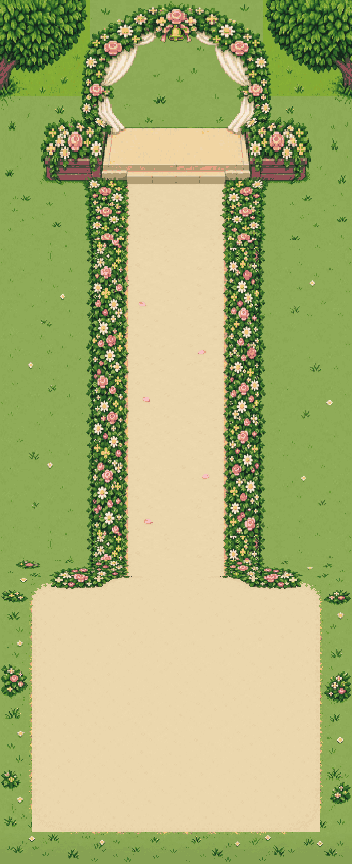
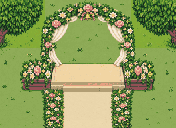
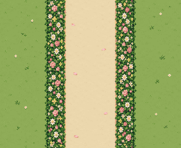
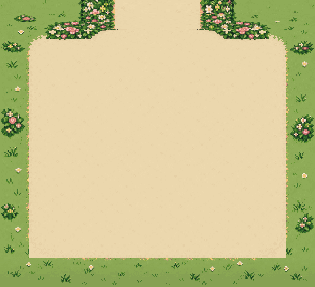

새 배경4장 제작 · 실제 장면 합성은 Claude 연결 예정
한 장으로 이어지는 정원
352×256 + 352×288 + 352×320 = 352×864. 중앙 길96px, 좌우 꽃띠 각40px입니다. 커플·문·표지판·하객은 배경에 그리지 않았습니다.
전체 연결 · 1px = 내부1px


모바일 모형은 위쪽20px 여백과 내부 폭352 기준입니다. 실제 앱의 HUD/뷰포트/카메라를 바꾸지 않았습니다. Claude가 REVIEW_MAP의320 내부 폭 제안을 채택하면 좌우16px씩 잘릴 수 있으므로 별도로 확인해야 합니다. 격자와 예약 사각형은 검토용이며 PNG에는 들어 있지 않습니다.
접합 검사
| 연결 | 픽셀 검사 |
|---|
| top 하단 ↔ repeat 상단 | 검사 보고서 로드 중 |
| repeat 하단 ↔ repeat 상단 | |
| repeat 하단 ↔ bottom 상단 | |
선택 항목 · 방명록 배경도 제작
초록 나무·벚꽃나무·장미·라벤더·버드배스가 그림에 포함됩니다. 우체통(128,64)–(192,160), 두 사람(3/6열·4행), 중앙32px 길(160,160)–(192,448)을 격자로 검토합니다. 메시지 꽃은 코드가 빈 잔디에 올립니다.
원본 조각 · 50% 크기



치수·색·접합 보고서 · 생성 프롬프트 · 352×864 연결 PNG · 현재 앱